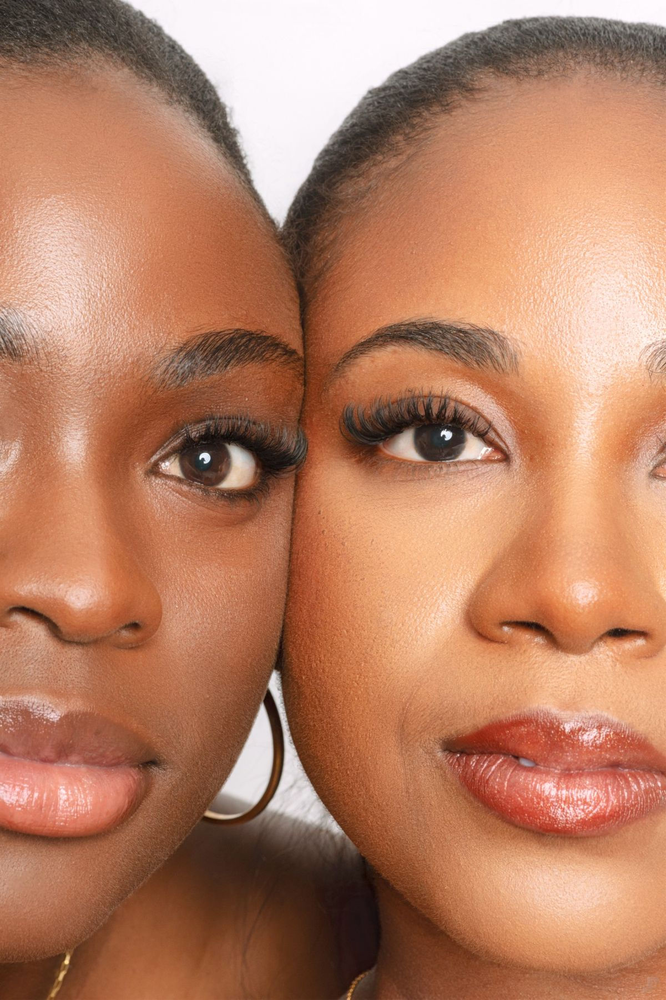
Un regard sur mesure, pensé avant d'être posé.
Extensions de cils et sourcils à Ducos. Diagnostic offert avant chaque rendez-vous.
Réserver mon rendez-vousNos prestations.
Un diagnostic avant chaque rendez-vous.
Pour les cils : la forme de vos yeux, l'épaisseur de vos cils naturels et vos attentes. Pour les sourcils : leur épaisseur, s'ils sont disciplinés ou non, et vos attentes. La prestation est adaptée pour qu'elle vous aille au mieux.
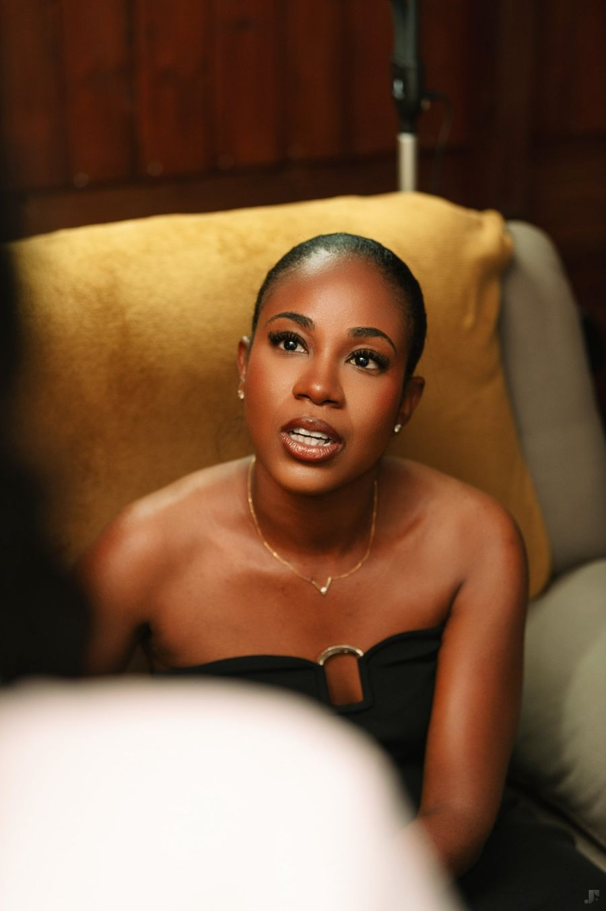
Nos réalisations.
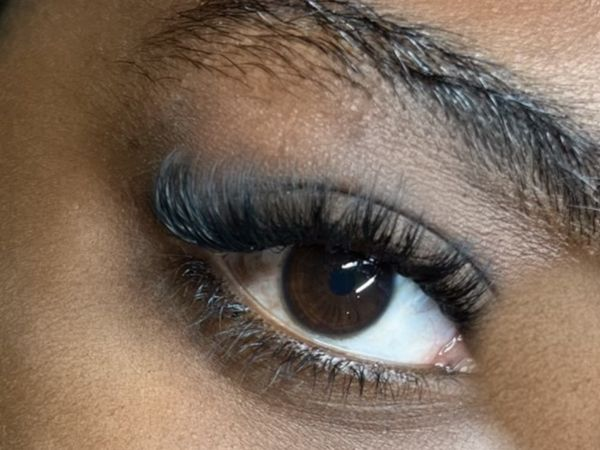
Avant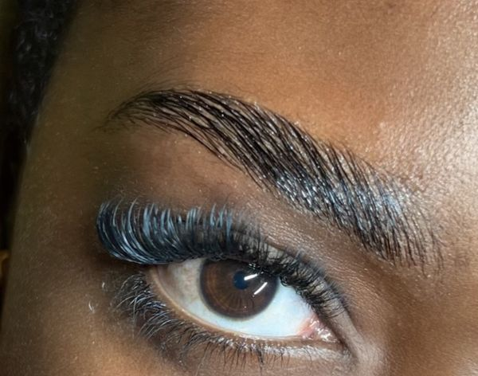
Après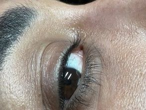
Avant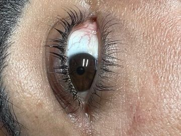
Après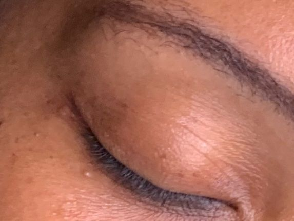
Avant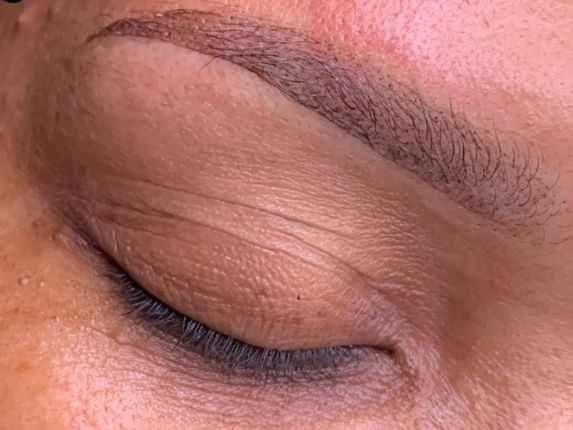
Après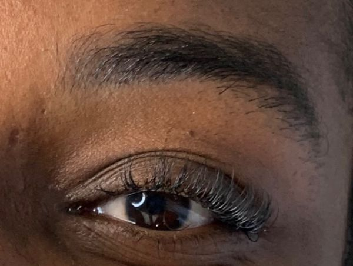
Avant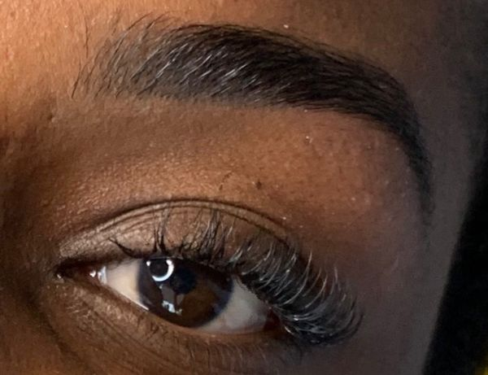
Après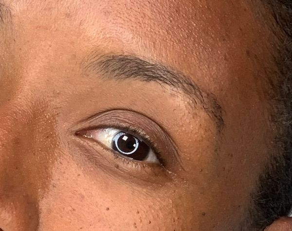
Avant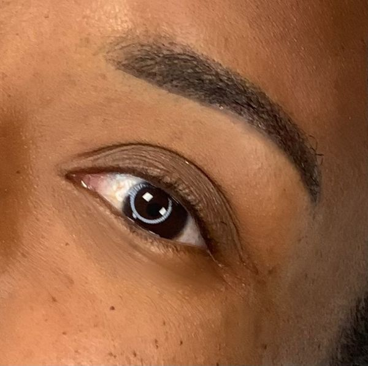
AprèsLe déroulement de votre rendez-vous.
- 01Le diagnostic
Chaque rendez-vous commence par un diagnostic de vos cils ou de vos sourcils, pour choisir ensemble la prestation adaptée.
- 02La prestation
Une fois le diagnostic fait, la prestation commence dans une ambiance calme et détendue.
- 03L'entretien
Je vous donne des conseils d'entretien pour faire durer le résultat.
- 04Le suivi
Vous revenez pour entretenir votre résultat : remplissage, retouche ou nouveau rendez-vous selon votre prestation.
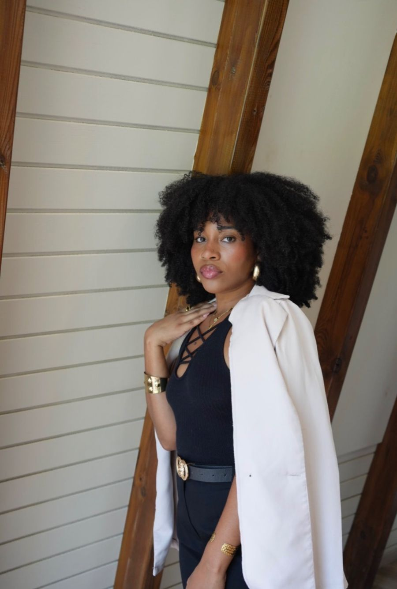
Malorie, spécialiste du regard depuis 5 ans.
Esthéticienne spécialisée en beauté du regard, je vous reçois dans mon studio privé à Ducos. Mes clientes me décrivent souvent comme calme, accueillante et à l'écoute de leurs envies.
Mon objectif est de permettre aux femmes de se sentir plus confiantes et plus belles, grâce à la beauté du regard.
Avis clientes.
« J'ai essayé le rehaussement de cils chez Exotic Beauty cil et je dois dire que je suis ravie du résultat ! »
« Superbe prestation du début à la fin. Malorie m'a mise à l'aise tout au long, elle est vraiment douce. »
« Un agréable moment avec Malorie ! Au-delà d'être extrêmement douce, elle est très pédagogue et prend le temps d'expliquer chaque étape. »
« Une excellente expérience ! Malorie est une personne très accueillante et à l'écoute. Elle prend vraiment le temps de comprendre et de donner des conseils. »
« Très satisfaite de la prestation de Malorie ! J'ai fait le lash lift et mes cils étaient on fleek durant 2 mois, même plus ! »
« 100 % satisfaite de ma prestation ! Malorie a été à l'écoute concernant mes attentes, douce et rapide. Le résultat est comme je le souhaitais. »
« Très professionnel, au petit soin et à l'écoute. Pour une première fois, j'ai été mise en confiance, bien conseillée. J'ai déjà pris mon prochain RDV. »
« Le cadre du rendez-vous est très cocooning et relaxant. D'autant plus que les rendez-vous sont accompagnés de musiques douces :) »
« Malorie est très professionnelle et cela se ressent dès les premiers échanges. Très douce et attentionnée durant l'épilation, on ne sent presque rien ! »
« Excellente prestation, elle est très douce et à l'écoute. »
Questions fréquentes.
Les extensions abîment-elles les cils ?+
Non, si la pose est adaptée. Les extensions sont plus légères que vos cils naturels, et le cil suit son cycle de pousse normalement.
Combien de temps dure le résultat ?+
Cela dépend de la prestation : 3 à 4 semaines pour les extensions de cils, jusqu'à 8 semaines pour un lash lift ou un brow lift, 12 à 18 mois pour l'ombré powder brow.
Comment me préparer ?+
Venez sans maquillage sur la zone traitée. Les consignes propres à chaque prestation sont indiquées sur sa fiche.
Et si j'ai la peau ou les yeux sensibles ?+
Signalez-le à la réservation. On en parle pendant le diagnostic, avant de commencer la prestation.
Horaires d'ouverture.
12:30 – 17:00
12:30 – 17:00
12:30 – 17:00
12:30 – 17:00
12:30 – 17:00